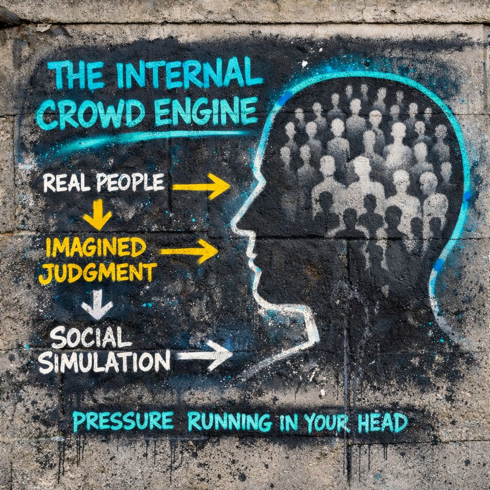

🌐 The Generalized Other
🧠 The Internal Crowd Engine
In George Herbert Mead’s symbolic interactionism framework, the generalized other is the wider social perspective you learn to carry inside yourself.
It is not just your parents, your teachers, your town, or the loudest person online.
It is the internalized sense of what “people” expect, approve of, punish, reward, and recognize.
The crowd gets miniaturized and installed.
📡 IPT Translation
after it has moved indoors.
At first, pressure comes from outside:
- faces
- reactions
- approval
- ridicule
- norms
- roles
Later, the room no longer needs to be present.
The room is now running in simulation.
“What are they doing right now?”
the nervous system begins asking:
“What would they think if I did this?”
⚙️ The Mechanism
Stage 1
Repeated Social Exposure
- smiles
- disapproval
- silence
- status cues
- role expectations
Stage 2
Pattern Extraction
- what gets welcomed
- what gets punished
- what creates belonging
- what creates friction
Stage 3
Internal Simulation
- “That would sound stupid.”
- “People like this version of me.”
- “I better not say that here.”
Stage 4
Self-Regulation
- editing yourself before speaking
- anticipating backlash
- performing acceptable self
🌪 Modern Conditions
In a slower world, the generalized other may have been:
- family
- church
- school
- town
- profession
Now it can also include:
- platform audiences
- follower expectations
- algorithm-shaped visibility norms
- parasocial subcultures
- multi-public reputation anxiety
You can refresh it.
⚠️ Internal Crowd vs Actual People
The generalized other is not identical to real people.
It is a compressed social model.
Which means it can become:
- harsher than reality
- more rigid than reality
- more panicked than reality
- more moralizing than reality
often really means:
“My internal social simulation predicts threat.”
👁️ Common Signs The Internal Crowd Is Active
- You rehearse explanations before anyone asked
- You feel embarrassed alone
- You censor thoughts before language forms
- You imagine backlash before expression
- You evaluate yourself from outside yourself
- You perform “acceptable self” automatically
📉 Overclocked Generalized Other
1. Hyper-Self-Monitoring
stiffness
inhibition
anxiety
reduced spontaneity
2. Identity Compression
flattening
muted individuality
performative narrowness
3. Audience Capture
expression optimized for reception
self becomes a managed product
4. Norm Debt
guilt for divergence
chronic conformity pressure
social accounting fatigue
🔓 IPT Intervention Point
IPT does not try to delete the generalized other.
It tries to make it visible.
“People will reject this.”
IPT introduces:
“My internal crowd model is firing.”
That shift is small in wording. Huge in power.
📡 Final IPT Distillation
without instantly obeying it.
Inside that gap:
- velocity can slow
- meaning can loosen
- identity can remain unfixed a little longer
And that little longer is often where freedom sneaks in.